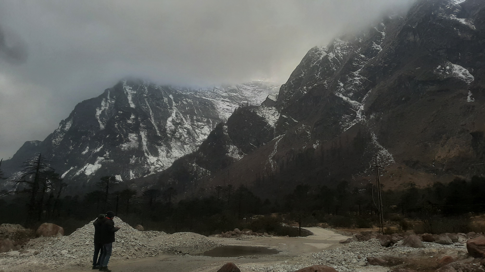

Home
Manojit's Travel story
Welcome to Manojit's Blog, your ultimate travel companion for exploring the world! Our travel blog is designed to inspire, inform, and guide you on unforgettable adventures, whether you're an intrepid backpacker, a family seeking new experiences, or someone in search of a luxurious getaway.
Through personal stories, stunning photography, and insider tips, we cover everything from hidden gems and off-the-beaten-path destinations to must-visit landmarks across the globe. You'll find practical advice on the best time to visit, where to stay, what to eat, and how to make the most of your trip.
Whether you're looking for adventure, relaxation, cultural immersion, or food experiences, our blog offers expert recommendations, detailed itineraries, and budget-friendly travel ideas to help you create lasting memories. Join us as we explore diverse landscapes, vibrant cities, and unique cultures, and start planning your next adventure with confidence.
Read more...
Blog Section
Blog 1
Sandakphu
Posted on February 10, 2020

A blog about Sandakphu is an exploration of one of the most captivating trekking destinations in India. Located in the Darjeeling district of West Bengal, Sandakphu offers breathtaking views of the highest peaks in the world, including Everest, Kanchenjunga, and Lhotse. The blog provides valuable insights into the Sandakphu trek, highlighting the scenic beauty, diverse flora and fauna, and the unique cultural experiences that trekkers can expect along the way.
The blog includes practical tips for trekkers, such as the best time to visit, necessary permits, and equipment to carry. It delves into the trekking routes, difficulty levels, and details about accommodation options along the route. For nature enthusiasts and adventure seekers, the blog also describes the rich biodiversity of the region, including sightings of rare animals like the red panda and Himalayan tahr.
The Sandakphu trek, part of the larger Singalila National Park, offers a combination of physical challenge, serenity, and panoramic views that draw trekkers from across the globe. A Sandakphu blog, therefore, serves as a comprehensive guide, providing inspiration, tips, and stories from trekkers who have experienced the beauty of this remarkable destination.
- Location: Sandakphu is the highest point in West Bengal, located at 3,636 meters above sea level. It's situated on the Singalila Ridge, on the border of West Bengal and Nepal, and is part of Singalila National Park.
- Views: Sandakphu is known for its views of the Himalayan range, including Mount Kanchenjunga, also known as the Sleeping Buddha. On a clear day, you can also see Mount Everest, Makalu, and Lhotse
- Food: You can expect to have morning tea, breakfast, lunch, evening tea and snacks, and dinner with titbits during the trek.
- Trek: The Sandakphu trek is a popular adventure for nature lovers. The trek passes through Nepali villages and Singalila National Park, where you can see rare orchids, rhododendrons, and red pandas.
- When to visit: The best time to visit Sandakphu is from October to mid-December and mid-February to June. In the summer, you can see the rhododendron bloom, and in the winter, you can enjoy snowfall.
Blog 2
Sikkim
Posted on February 15, 2023

A blog about Sikkim is a comprehensive guide to exploring the mesmerizing beauty of this small yet captivating state in northeastern India. Nestled in the lap of the Himalayas, Sikkim is renowned for its pristine landscapes, diverse culture, and breathtaking views of snow-capped peaks, including the majestic Kanchenjunga, the third-highest mountain in the world. The blog offers travelers a detailed journey through the region’s rich natural wonders, from lush valleys and alpine meadows to vibrant monasteries and charming villages.
The blog delves into Sikkim's main attractions, such as the tranquil Tsomgo Lake, the enchanting Yumthang Valley, and the serene town of Pelling. It also explores adventure activities like trekking, river rafting, and paragliding, making Sikkim a haven for thrill-seekers. For those interested in spirituality and culture, the blog highlights the state's Buddhist monasteries, traditional festivals, and local customs that reflect its unique heritage.
Travel tips are also a key feature, with information on the best time to visit, transportation options, accommodation, and permits required for specific regions. The blog may also cover the state's ecological diversity, highlighting its role in preserving rare flora and fauna, including the red panda.
Whether you're looking for adventure, tranquility, or cultural immersion, a Sikkim blog serves as an ultimate resource, offering inspiration and practical advice to help you explore the hidden gems of this stunning Himalayan destination.
- Geography: Sikkim is a mountainous state with elevations ranging from 280 to 8,585 meters. It has many mountain passes that connect it with Bhutan, Tibet, and Nepal
- Organic state: Sikkim became India's first fully organic state in 2016.
- Teesta River: A must-visit spot for tourists in Sikkim.
- Lachung: A famous mountain village in Sikkim known for its natural beauty.
- Gurudongmar Lake: Located at an altitude of 5,425 m (17,800 ft), this is one of the highest lakes in the world and in India.
Blog 3
Sundarban
Posted on August 10, 2024

A blog about the Sundarbans is an in-depth guide to exploring the world's largest mangrove forest, a UNESCO World Heritage Site, and a unique ecosystem located in the delta of the Ganges, Brahmaputra, and Meghna rivers in India and Bangladesh. The blog offers a detailed journey through the Sundarbans' rich biodiversity, fascinating landscapes, and cultural heritage, providing readers with everything they need to know to explore this stunning region.
The blog covers various aspects of the Sundarbans, such as the famous Royal Bengal tigers that inhabit the area, along with other wildlife like spotted deer, saltwater crocodiles, and countless bird species. It highlights the unique flora and fauna of the region, making it a haven for nature lovers, wildlife photographers, and adventure seekers.
Practical tips are also included, such as how to reach the Sundarbans, the best time to visit, and the local guides and tours available for navigating the vast network of rivers and tidal waterways. Additionally, the blog may explore the challenges of conservation in the area, the ongoing efforts to protect the fragile ecosystem, and the lives of the local communities who rely on the forest for their livelihoods.
With its focus on nature, adventure, and conservation, a Sundarbans blog offers both informative and inspiring content for travelers, wildlife enthusiasts, and anyone interested in one of the most unique and awe-inspiring natural wonders of the world.
- The Sundarbans is a mangrove forest in the Bay of Bengal that spans parts of India and Bangladesh.
- It's the world's largest mangrove forest and the only one where tigers live.
- The Sundarbans is a UNESCO World Heritage site.
- The Sundarbans is home to many rare and threatened species, including the Bengal tiger, estuarine crocodile, Indian python, and Gangetic dolphin
- The Sundarbans is a wetland nursery for marine organisms and a climatic buffer against cyclones